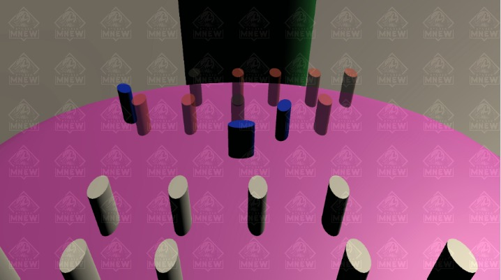
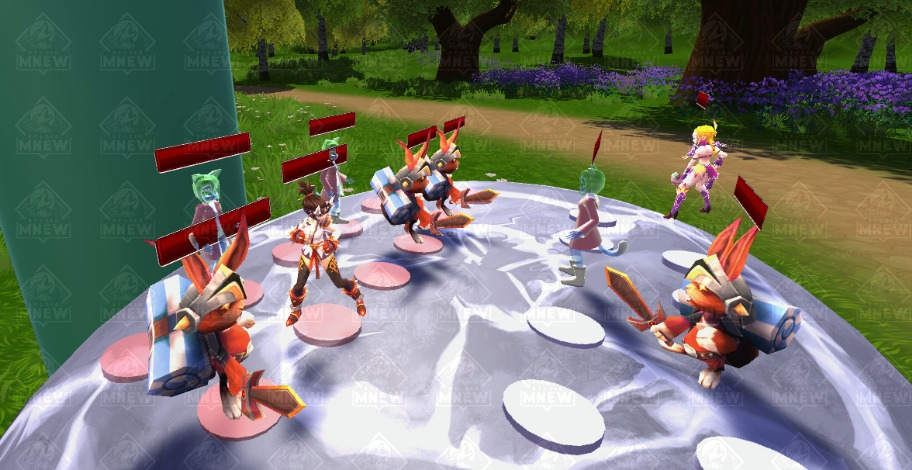
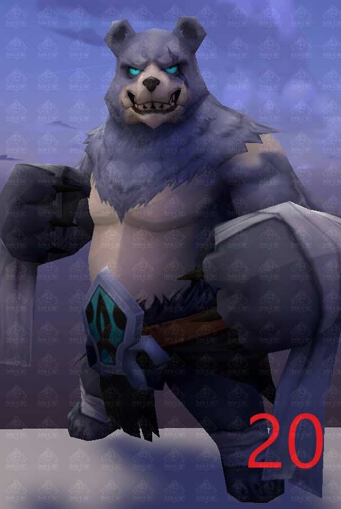
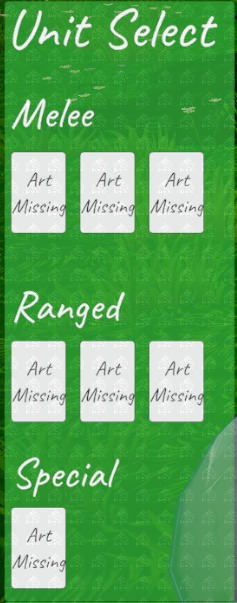
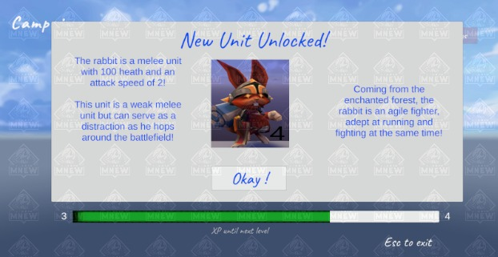
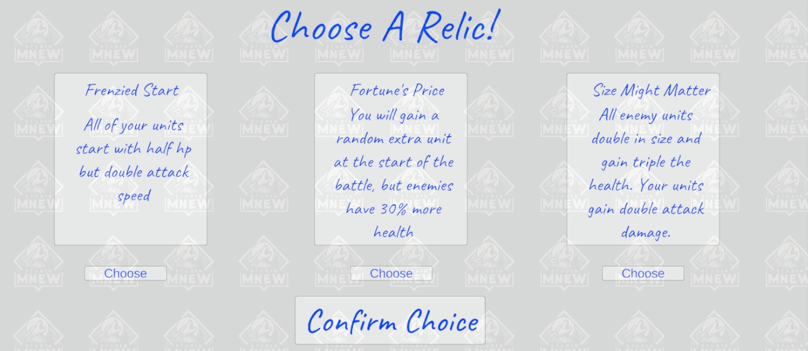
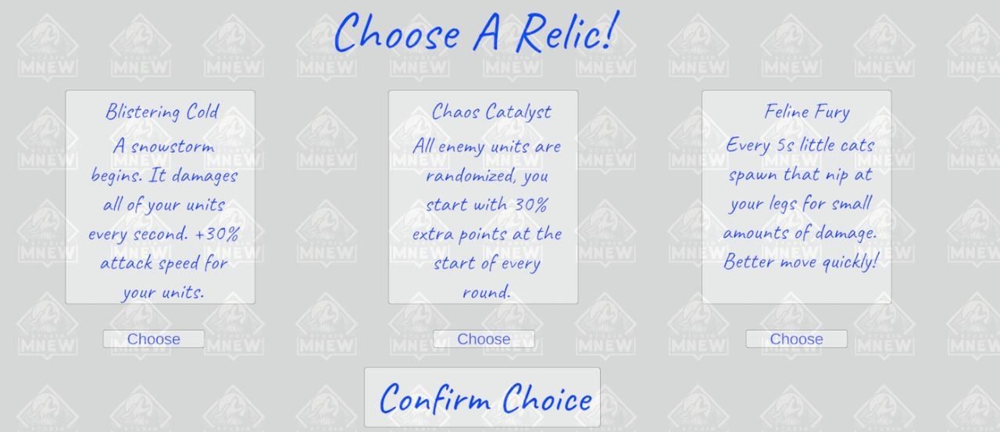
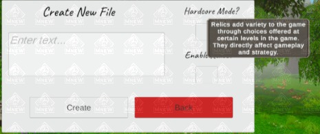

Table Tactics!
Concise Summary:
Concept and Inspiration:
I wanted to combine the aspects of a tabletop/board game and a strategy game to make something that emulates a mix of both genres designed for desktop/PC play. The idea was essentially having a game loop where the player chooses locations to place their units and pits them against the enemies set of units for multiple rounds. Strategy is involved, as players must manage the amount of points they have to spend on units (points carry over from round to round) and also consider where to place those units for maximum efficiency. With a fun variety of units and an increasingly difficult campaign mode, the game is going to be a ton of fun.
Team and Team Size:
This project is being developed entirely by myself. I wanted to test my skills and really bring my idea to life by myself. This includes handling art, sound, game mechanics, lore, and pretty much everything else by myself.
Main design goals:
I want to create a game that is easy to understand, fun, and has some replayability to it. This means having controls and UI that are intuitive and further explained through a tutorial. Units must be diverse, having abilities that are visually appealing and have impact in fights. Pick various units to place, pick where you want to place them, and watch them fight it out! Very simple but with endless opportunities for cool unit types and moves!
Main Challenges Faced so Far:
Tools and Technologies Used:
Game Features As Of Now:
Demonstration video (Last Updated 4-1-2023)
New Main Menu (3-29-23)
From Conception to current state (longer read):
Here is another one of my passion-projects in progress I'm working on in my spare time!
The idea for this game is sort of difficult to describe, but essentially the idea of the game is for the player to strategize and field their units correctly in order to beat the enemies units.
Here is my initial idea for the game board. It will be a 4x6, with the board spaces being split into half of the enemies units and half of the players units.

I then went ahead and began to plan the UI elements that the game would have. Starting with the UI that would accompany the game board.

I was planning to have health bars, with little pictures for each unit that was currently on the field, so give the player all the current information of the battlefield. Before the fight starts, the player needs to pick units, so I designed that interface as well.

Now that I had these sketches done, It was time to think about the campaign screen, as players would always arrive there before or after an encounter.
My idea was to have some large pictures with a difficulty rating, a picture of the enemy for themeing, and their name. I also wanted some text to let the player know they could back out to the menu if needed.
I was eager to jump in, so I chose a game engine I am very familiar with.... which was Unity.
The beginning of design!
I eagerly opened up a fresh Unity3D project, and got to work!
Here's the game board! The red and blue pegs represent the places the player can select to spawn units.

Of course I needed the UI to accompany this scene, so I went ahead and made that too! At this point it was very basic, but it was a good start.

It was at this point I also began to work on allowing the player to select UI elements and places to spawn units. When the player chooses a spot, it's color changes to blue. If they hover a spot with their mouse, it turns green. Lastly, any UI element that is selected turns a gold-hue.
Getting back on track, I went ahead and made a fast mock-up of my Menu screen. I plan to have a fight-in-progress going on with fancy camera angles eventually, but for now a simple background will do.

I'm not an artist, but I'm happy with this simple mock-up for now! Time for the campaign screen design! I'm really not focusing on the art at the beginning of the project, so this one is a placeholder as well.

Each one of the cards will be a different enemy the player must fight in succession, with multiple rounds of fighting to each of them. For now, the 'Choose' button brings you straight into the first fight.
After fixing a pesky bug that allowed players to select multiple spots to spawn units at once, I then worked on Instantiation of units at those selected spots.
For clarity, I changed the spots to spawn units at to white, and the temoorary unit that gets spawned to blue. Here's what that looked like:

You can see I played with UI a bit, as I moved the 'start fight' button to the right side of the screen and added a 'place unit' button as well. The player also needs to deselect a position if they change their mind, so I added that feature as well with a right click of the mouse. The three blue units were prefabs that got spawned upon clicking the spawn unit button.
After clicking the 'start fight' button, the simulation begins and at this time only our 3 units go attack the other enemy units that are darker color.
I was happy with what I had so far, I just wanted to make some tweaks to colors and improve visibility for the player selecting positions to spawn their units. I also made some lighting changes and began to work on a better AI with actual animations.
My first idea for a weak melee unit was a little bunny rabbit with a sword. Ideally, he should be very annyoing and hop around all the time to try to stay out of enemies attack ranges, but be super squishy/low health. So that's what I did my best to create.
My first unit!
The AI will decide whether to strafe at random times, or move in close for an attack! It will always prioritize whatever enemy is closest to it.
I fixed my lighting bug that was occuring, and added some texture to the background/floor and to the tabletop.

As you can see, the visibility of units, spaces, and overall look of things drastically improved.

The next thing I had to do, was start to work on an enemy AI for my first unit and future units to fight. For now I adapted the bunny rabbit code, and made it work for enemy units as well.
Bunny fight!
Another one!
I have some small animation bugs, and the bunny only uses one attack, but now the units at least fight, and even have death animations! The bunny warpath begins!
Now that I had an enemy to fight, I am beginning to design and add more units to fight against or play on your side.

I added a slime girl who can perform basic attacks, but cannot strafe. I also added a harpy, who can strafe and has quite a long attack range.
Here is a sample of some of these units fighting:
I want something that is good to look at in the background while all the action is happening, so I'm experimenting with different terrains!
Here is some more action with even more characters!
I plan to add some juicy feedback for the player, such as damage popups and of course audio so the player really feels the combat!
For now, Here is a demonstration playthrough of one of my levels! (No commentary)
Teaser image for my first special unit! (The giant blue bear if you can't tell)
Here is a video (fully) showcasing the audio adjustments I have included for player comfort!
Update 1-8-23:
Here is my amazing wireframe drawing detailing my plans.

My idea for the mana bar was for units to earn their ability over time through participation in combat. Giving players room for strategies like backline mages that would continue to build mana from afar. It also helps with a rush of adrenaline as players can visually see when a unit is about to unleash their abilities!
First Testing of health bars:
What health bars look like when fully depleted or when damaged:
Additonally, health bars will disappear when units die, so that fights are not cluttered with irrelevant information.
As you can see from the screenshots above, I also implemented camera controls, circular travel around the table + up/down + zooming in/out.
Update 1-9-23:
Ran into significant bugs while trying to work on a new AI that improves animation realism....
Ideas for tutorial: (each step is a different UI that appears only for that step and disappears after the requested action is completed)
Here are the wireframes for my tutorial, that will introduce the main mechanics and gameplay loop of my game:


With these wireframes in mind, I setout to work on the tutorial.
After completing the tutorial, I realize that I need an additonal tutorial that explains the campaign screen... For now I will put that off to work on other features.
For the campaign tutorial screen I want to touch on:
Update 1-26-23
I made a LARGE amount of changes since the previous update. So here is a video demonstration to prevent a wall of text that you would have to read! Keep an eye out for my save system and tutorial changes!
Please note that there is no audio for my first two tutorial levels. This is because I plan to have narration explaining text on the screen, and that is a work in progress. All subsequent levels have fully functioning audio, as shown in previous videos.
The video demonstrates my tutorial 1, tutorial 2, and my new save system that keeps track of how far a player has gotten in the game. Even if the player exits the unity play mode, their data is saved, and they will start from where they left off if they click the 'continue' option on the main menu.
Here is another video update, which shows some additional levels, and my save system in use.
Update 2-2-23
Here is a video showing demonstration of new enemy models!
Update 2-6-23:
Lastly, here is a demonstration of the bear units ability!
Update: 2-7-23:
Rally: Heal a certain amount (20), Increase max health (50), Doubles attack speed This ability can occur multiple times in a fight, making syrian warrior a very strong unit but with a medium health pool (150 w/out bonuses)
Update 2-8-23:
Update 2-9-23:
I know there are a lot of changes now without a video or gif, don't worry there is a huge one coming!
Update 2-10-23:
Update 2-11-23:
Update 2-12-23:
Update 2-13-23:
At this point you can see I've been consistently getting work done. In lieu of spamming you with updates until the 20th of March, I will just post some screenshots to help you visualize some of the changes.
Some snapshots of visual updates to the game:
Context: I added images of units with their point cost included in the corner so that I could update the UI that helps players spawn units.
Here is what the UI looked like before the update, and after the update:
If you've been paying attention, I also added a color pallet swap to green to match the nature levels of the game :).
Tired of seeing the boring stuff? So am I. The following is my studio logo (made with canva)! Keep in mind I'm a one man show here so I made it a bit funny because why not.
Showtime! Here is a demonstration playthrough of the game in its current state on 2-20-2023. This is what my first group of play testers are seeing.
I've gotten great feedback on the game from my group of playtesters, and have begun work on some of the suggestions put forward!
Update 2-22-23:
Update 2-23-23:
Things added from 2-23 until 3-11
Here is some of the brainstorming I did, followed by the final products.
Pop up/unlock screen draft:

Unlock/Choice screen draft for relic system:

draft ideas for relics:

Here was my first try at implementing an unlock screen!
Here is the Experience Bar you will be greeted with before and after every fight!

Now, onto the finale! Here are my final implementations of a few of the BIG things In this large update.
My new unit description and unlock screen!

Some of the relics I came up with and added to the game:
 Here is a full list of the relics I have planned and came up with:
Sorry for the text dump, but I had a lot of great ideas to share! Don't forget that the relics in my game are randomized! Each playthrough is different from the last! I also have abilities planned for the player to activate while in battle, but that's for another time!
Here is a new video playthrough to help you visualize some of the changes. Soon I have a group of videos SPECIFICALLY showing off each relic I have added and its effects in battle! Enjoy the video!
Timestamps of note are at 5 minutes and at 7:40. Those time stamps will show you the relic system and the new unit being unlocked!
Relics currently in the game for playtesting:
Update 3-12-23
Check out my new main menu screen!
Updates 3-13 - 3-30
Well thats enough of a text dump. Here is a video now. Go on and check it out!
Gameplay demo and short showcase of the new map! Play the game to see the rest!
Demo of the revised new main menu that shows the new map after a full camera rotation!
Update 4-1-23
The new playtestable version of the game is out! Now in a standalone executable file! Super easy to run! Check out the demo:
Updates for 4-2 to 4-12
Here are some snapshots of these changes:
Tooltip and UI changes:


New explosion particles (much better than those big red boxes)
Action shot of archer shooting arrow prefab!

Latest Update Screenshots with Board Hazards!


New survival mode with 15 waves!

Can you make your points last long enough?
 Things that are being worked on:
Things that are being worked on:
That's all the updates for now! Thank you for checking out TableTactics, and for following along with me on this journey. Are you interested in getting involved in play testing? The game can be tested exactly as you see it right now! Contact me via my discord Mnew#0748 !! If that doesn't work for you then shoot me an email at michaelsn22@yahoo.com!